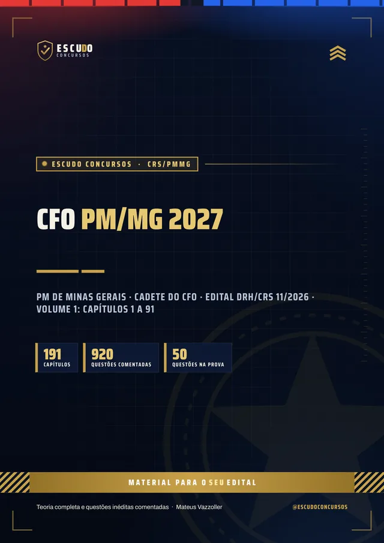
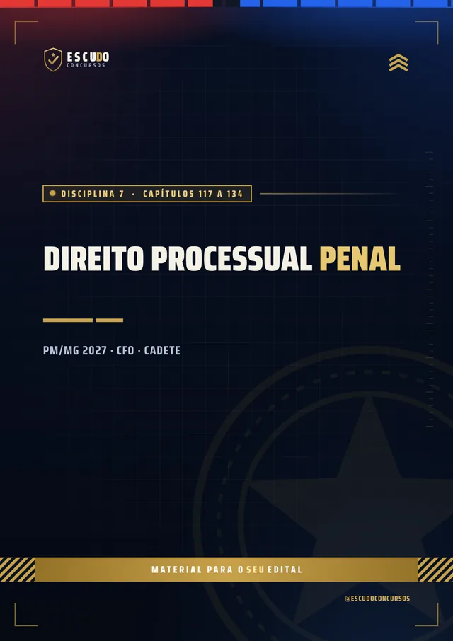
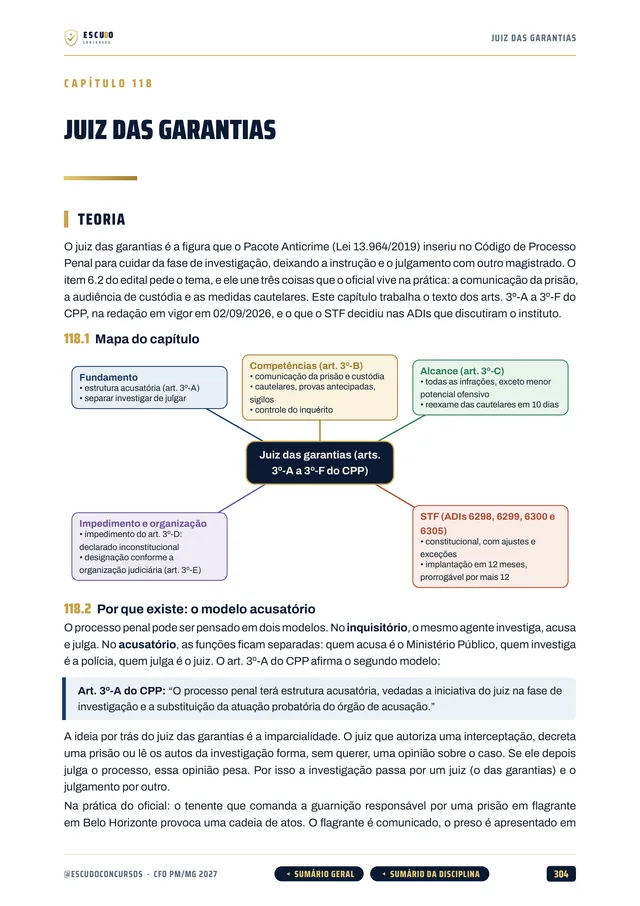
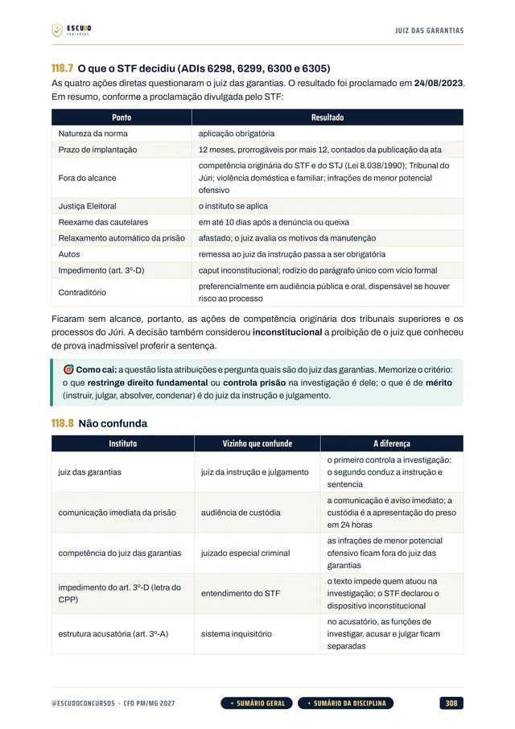
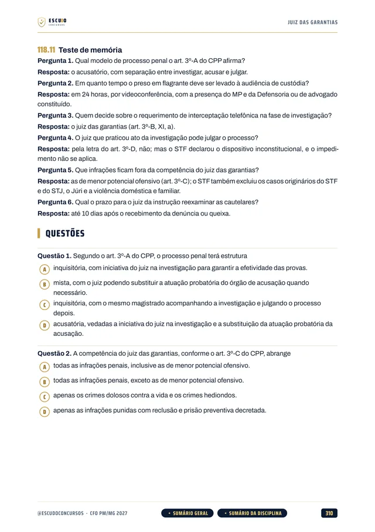
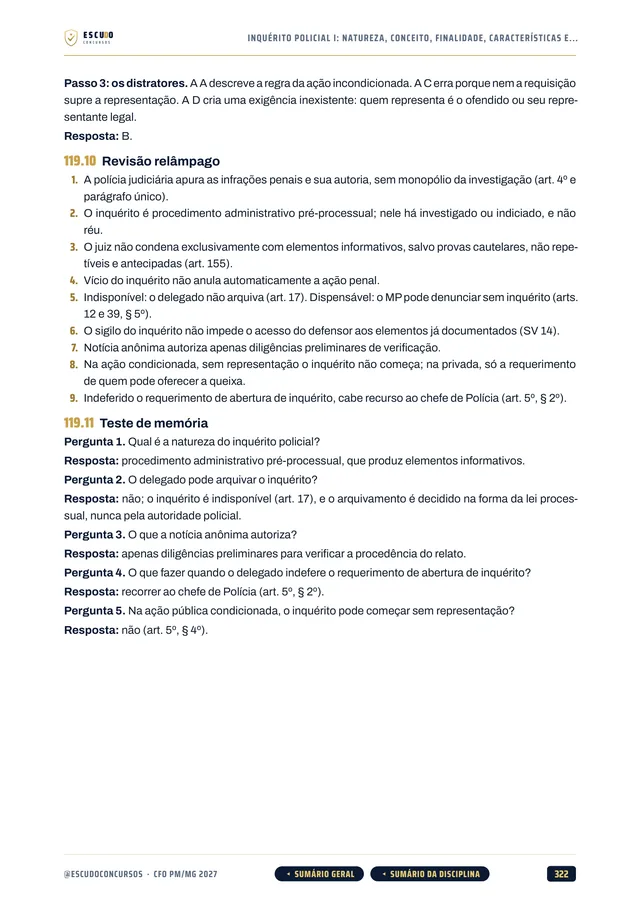
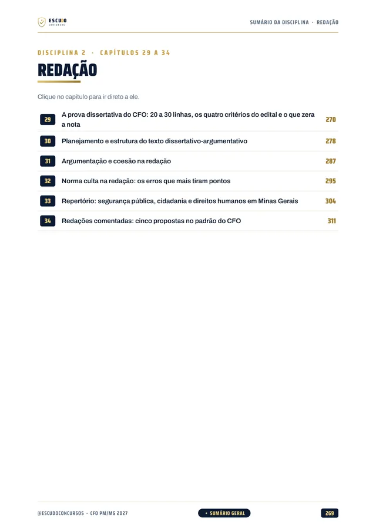
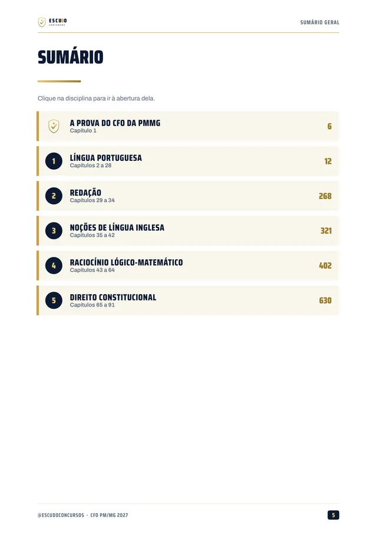
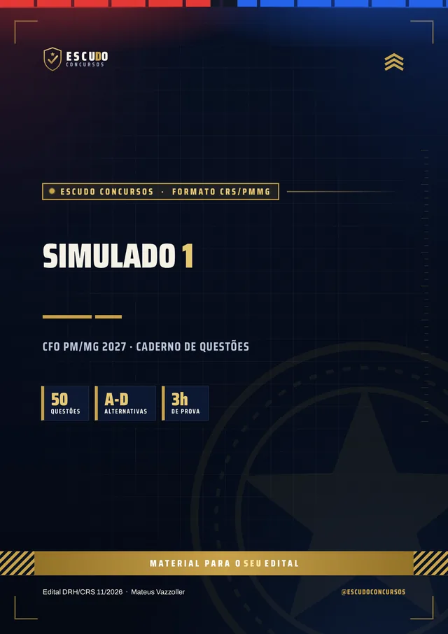

Simulado 1
No meio do caminho
Para medir onde você está e ajustar o estudo enquanto ainda dá tempo.
8 dias após a compra
Material independente, sem vínculo com a Polícia Militar de Minas Gerais nem com o CRS/PMMG.


920questões
comentadas
ConcursoCFO PM/MG2027 · Edital aberto
Briefing
Edital publicado: 90 vagas para Cadete do CFO da PMMG, prova em 10/01/2027. Curso feito de acordo com o edital (Edital DRH/CRS nº 11/2026, CRS/PMMG), item por item, com questões de 4 alternativas e gabarito comentado. O Direito vale 37 das 50 questões, e o curso cobre todas as disciplinas, mais a redação.
De acordo com o Edital DRH/CRS nº 11/2026 · CRS/PMMG
de R$ 59,90 por 21% OFF
R$47,00
com o cupom CFO47 até 10/12/2026, último dia de inscrição. Pelo botão, o cupom já vai preenchido.
R$59,90
Curso completo, com acesso imediato.
Terreno
O concurso
O Edital DRH/CRS nº 11, de 02/09/2026, abriu 90 vagas para o Curso de Formação de Oficiais da Polícia Militar de Minas Gerais (CFO/2027), carreira de Oficial do QO-PM. É preciso ser bacharel em Direito, e o Cadete do 1º ano recebe R$ 7.912,17. As inscrições vão de 10/11 a 10/12/2026, com taxa de R$ 243,00, e a prova objetiva e dissertativa é no dia 10/01/2027, das 8h30 às 12h30.
Não há banca externa: o Centro de Recrutamento e Seleção da PMMG (CRS/PMMG) organiza e escreve a prova. As questões do curso seguem o estilo do CRS/PMMG nas provas do CFO de 2023 e de 2025: quatro alternativas, de (A) a (D), afirmativas e letra de lei.
O curso foi feito de acordo com o edital, item por item do Anexo B, com a legislação vigente em 02/09/2026, data de publicação do edital, como o próprio edital exige. O Direito vale 37 das 50 questões.
| Disciplina | Questões | Capítulos |
|---|---|---|
| Língua Portuguesa | 5 | 27 |
| Noções de Língua Inglesa | 4 | 8 |
| Raciocínio Lógico-Matemático | 4 | 22 |
| Direito Constitucional, com a Constituição de Minas Gerais | 7 | 27 |
| Direito Penal | 6 | 25 |
| Direito Processual Penal | 6 | 18 |
| Direito Administrativo | 7 | 19 |
| Direito Civil e Direito Processual Civil | 5 | 17 |
| Legislação Extravagante e Direitos Humanos | 6 | 21 |
| Redação (prova dissertativa de 100 pontos) | 1 redação | 6 |
| Mais o capítulo 001, sobre como é a prova e como usar o curso. | 50 | 191 |
Protocolo
O formato
Você estuda lendo, no seu ritmo, pela área de membros da Hotmart ou com os arquivos baixados. O curso foi feito de acordo com o edital (Edital DRH/CRS nº 11/2026), disciplina por disciplina, com a legislação federal e a de Minas Gerais conferidas no texto oficial vigente em 02/09/2026, data de publicação do edital.
Reconhecimento
Páginas reais do PDF
Toque numa página para ver em tamanho maior.





100% em PDF · Garantia de 7 dias · Pagamento pela Hotmart
Equipamento
O que você recebe
Curso em PDF organizado em módulos pelas disciplinas da prova, com 2.115 páginas no padrão visual ESCUDO, para ler no computador, no tablet, no celular ou no app da Hotmart. Não há videoaulas.
191 capítulos de acordo com o edital: Língua Portuguesa (27), Redação (6), Língua Inglesa (8), Raciocínio Lógico-Matemático (22), Direito Constitucional (27), Direito Penal (25), Direito Processual Penal (18), Direito Administrativo (19), Direito Civil e Processo Civil (17) e Legislação Extravagante e Direitos Humanos (21), mais o capítulo de abertura sobre a prova.
920 questões inéditas com 4 alternativas, de (A) a (D), todas com gabarito comentado: por que a correta está correta e onde erra cada uma das outras três.
O Direito, que vale 37 das 50 questões: Constituição Federal e Constituição de Minas Gerais, controle de constitucionalidade, juiz das garantias e ANPP no Processo Penal, Leis 14.133, 13.019, 8.429 e 13.709 e o Decreto Estadual 45.969/2012 no Administrativo, posse e propriedade no Civil, e a legislação extravagante com os direitos humanos.
Redação em 6 capítulos: a prova dissertativa de 20 a 30 linhas, com os critérios do edital, planejamento, argumentação, norma culta, repertório sobre segurança pública em Minas Gerais e cinco propostas comentadas.

Teoria com recursos para memorizar: mapa de cada capítulo, quadros "Não confunda", casos práticos, revisão relâmpago e teste de memória.
Navegação clicável: do sumário você vai direto à disciplina e ao capítulo, e volta pelos botões do rodapé.

2 simulados inéditos de 50 questões de 4 alternativas, na distribuição do edital, com caderno de comentários. O Simulado 1 vem aos 8 dias e o Simulado 2 em 03/01/2027, 7 dias antes da prova.

Plano de ação
Área de membros
| Módulo | Conteúdo | Liberação |
|---|---|---|
| M0 Comece aqui | Apresentação + capítulo 001 (como é a prova e como usar o curso). Bônus: PDF completo para baixar e imprimir, em dois volumes | Na compra; o PDF completo no 8º dia |
| M1 Língua Portuguesa e Redação | Capítulos 002 a 034 | Na compra |
| M2 Língua Inglesa e Raciocínio Lógico-Matemático | Capítulos 035 a 064 | Na compra |
| M3 Direito Constitucional e Constituição de MG | Capítulos 065 a 091 | Na compra |
| M4 Direito Penal | Capítulos 092 a 116 | Na compra |
| M5 Direito Processual Penal | Capítulos 117 a 134 | Na compra |
| M6 Direito Administrativo | Capítulos 135 a 153 | Na compra |
| M7 Direito Civil e Processo Civil | Capítulos 154 a 170 | Na compra |
| M8 Legislação Extravagante e Direitos Humanos | Capítulos 171 a 191 | Na compra |
| M9 Simulado 1 | 50 questões e caderno de comentários | 8 dias após a compra |
| M10 Simulado 2 | 50 questões e caderno de comentários | Em 03/01/2027, 7 dias antes da prova |
Treinamento
Treino no formato da prova
Cada simulado tem 50 questões de 4 alternativas, na distribuição do edital (5 de Língua Portuguesa, 4 de Inglês, 4 de Raciocínio Lógico-Matemático, 7 de Direito Constitucional, 6 de Penal, 6 de Processo Penal, 7 de Administrativo, 5 de Civil e Processo Civil e 6 de Legislação Extravagante e Direitos Humanos), com caderno de comentários.
Simulado 1
Para medir onde você está e ajustar o estudo enquanto ainda dá tempo.
8 dias após a compra
Simulado 2
Cobre o programa inteiro de novo, para o seu teste final.
Em 03/01/2027
Perfil
Para quem é
Para quem vai prestar o CFO da PMMG e tem cerca de oito semanas até a prova: estudar pelo programa do edital, com foco no Direito, que vale 37 das 50 questões, e sem perder tempo com assunto que não cai.
Proteção
Você tem 7 dias de garantia pela Hotmart. Se não for o que você esperava, pede o reembolso pela própria Hotmart, dentro do prazo.
Cronograma
Sem surpresa na área de membros
Na compra: todas as disciplinas em PDF, uma por módulo, com a teoria e as questões comentadas. É o curso inteiro, para começar a estudar no mesmo dia.
8 dias após a compra: o PDF completo para imprimir. É o mesmo conteúdo dos módulos num arquivo só, liberado depois da garantia de 7 dias.
Simulado 1: 8 dias após a compra, porque a prova está a poucas semanas.
Simulado 2: em 03/01/2027, 7 dias antes da prova, para o último teste.
O PDF completo e os simulados aparecem bloqueados na área de membros até a data de cada um: não é conteúdo faltando, é a liberação programada.
Instrução
Dúvidas
Não. É um curso 100% em PDF: teoria, questões comentadas e simulados para ler e resolver.
O acesso é imediato depois da confirmação do pagamento, pela área de membros da Hotmart (web ou app). O PDF completo para baixar e imprimir é liberado no 8º dia.
O Simulado 1 é liberado 8 dias após a compra e o Simulado 2 em 03/01/2027, 7 dias antes da prova.
O Edital DRH/CRS nº 11, de 02/09/2026, do Curso de Formação de Oficiais da PMMG (CFO/2027), com 90 vagas. O curso foi feito de acordo com o edital, item por item do Anexo B, com a legislação vigente na data de publicação do edital. Se houver retificação, o curso é conferido e ajustado.
A prova objetiva e dissertativa é em 10/01/2027, das 8h30 às 12h30. As inscrições vão de 10/11 a 10/12/2026, e a taxa é de R$ 243,00. Confirme sempre as datas no edital e no site do CRS/PMMG.
Não há banca externa. Quem organiza e escreve a prova é o próprio Centro de Recrutamento e Seleção da PMMG (CRS/PMMG). As questões do curso seguem o estilo das provas do CFO de 2023 e de 2025.
Não. A prova objetiva tem 50 questões de múltipla escolha com quatro alternativas, de (A) a (D), e uma só correta, valendo 2 pontos cada, mais uma redação dissertativo-argumentativa de 20 a 30 linhas. O curso segue esse formato.
Sim. O curso traz a Constituição do Estado de Minas Gerais e o Decreto Estadual 45.969/2012, que o edital manda estudar, junto com a legislação federal do programa: juiz das garantias, ANPP, Lei 14.133 e Lei 13.019, entre outras.
Está no curso, em 6 capítulos: os critérios de correção do edital, planejamento e estrutura do texto, argumentação, norma culta, repertório sobre segurança pública em Minas Gerais e cinco propostas comentadas.
As 920 questões de treino e as dos simulados são inéditas, escritas a partir do programa do edital, no estilo do CRS/PMMG.
Você tem 7 dias de garantia pela Hotmart. Se não for o que você esperava, pede o reembolso.
Missão
CFO PM/MG 2027
de R$ 59,90 por 21% OFF
R$47,00
com o cupom CFO47 até 10/12/2026.
R$59,90
Curso completo, com acesso imediato.
Material para o SEU edital. ESCUDO Concursos.
Continue estudando